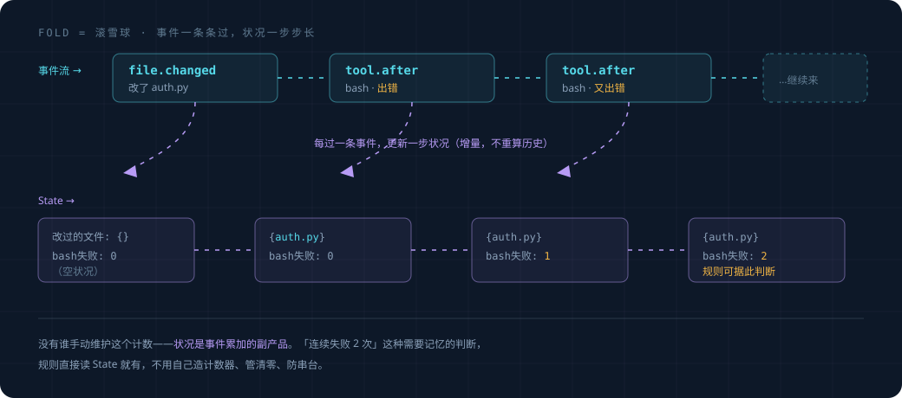

事件与状态（地基）#
这是整层最底下的两块砖：事件长什么样，状态怎么从事件累加出来。
overview 里点到为止，这里讲透。读这篇前先读完 overview.md。
1. 事件长什么样#
一条事件就是一个小数据包，记着"刚刚发生了一件什么事"。字段如下：
@dataclass
class Event:
id: str # 这条事件的唯一编号
ts: float # 发生时间（时间戳）
type: str # 什么类型的事，见下表
origin: str # 谁引起的：user / agent / tool / proactive / system
session_id: str # 属于哪个会话
payload: dict # 这类事件的具体内容（命令是什么、改了哪个文件……）
type 可能的值（够用就行，以后能加）：
| type | 什么时候产生 | payload 里有什么 |
|---|---|---|
user.prompt_submitted |
用户发了消息 | 消息文本 |
model.response_started |
模型开始回复 | — |
model.response_completed |
模型回复完 | 回复文本、是否声称完成 |
tool.before |
工具即将执行 | 工具名、参数（如命令字符串） |
tool.after |
工具执行完 | 工具名、结果、是否出错 |
file.changed |
某文件被改 | 文件路径 |
origin 这个字段很重要，记着"这件事是谁引起的"。大多数事件是 user / agent / tool 引起的，
但框架自己出手时也会产生事件（比如它弹了个提醒，就记一条 origin=proactive 的事件）。
为什么要区分？因为框架自己产生的事件，不能反过来又触发框架出手，否则会绕成死循环——
这个底线在 invariants.md 讲。
2. 事件从哪来#
事件不是凭空写的，是把 agent 干活过程中本来就发生的事翻译成统一格式。你的框架现在 已经在这些位置"知道"事情发生了，只是没统一记成事件：
- 工具执行前后，
agent_loop本来就会触发tool.before_use/tool.after_use（现有 hooks）。 - 模型流式回复时，本来就有"开始/结束"的信号。
- 用户发消息进来，dispatcher 本来就在处理。
proactive 层做的，就是在这些已有的点上，把发生的事翻译成一条 Event，丢进事件流。 （具体在哪几行接，是实现细节，见 实施规划。）
3. 事件流：一条只往后记的流水账#
所有事件汇成一条流——按发生顺序排好，只往后追加，已经记下的不改。
"只往后记、不涂改"这个性质（英文叫 append-only）带来一个很舒服的结果：任何时刻的 "当前状况"，都能由这条流从头算出来。 这就引出下一块——状态。
4. 状态：把事件流累加成"当前状况"#
4.1 fold 是什么#
规则做判断时，经常不只看眼前这条事件，还要看"积累下来的状况"——改了哪些文件、某工具 失败几次、模型是不是刚说了完成。这个"状况"不单独存，而是从事件流算出来。
算的方式叫 fold（滚雪球）：从一个空状况开始，事件一条条过，每过一条就更新一下状况， 过完就是当前状况。
def fold(事件流):
状况 = 空状况() # 雪球从零开始
for e in 事件流: # 一条条滚过去
状况 = 更新(状况, e) # 每条事件让雪球长一点
return 状况 # 滚完 = 当前状况
def 更新(状况, e):
if e.type == "file.changed":
状况.改过的文件.add(e.payload["path"])
elif e.type == "tool.after" and e.payload["出错"]:
状况.该工具失败次数[e.payload["工具"]] += 1
elif e.type == "tool.after" and not e.payload["出错"]:
状况.该工具失败次数[e.payload["工具"]] = 0 # 成功就清零
# ... 每种关心的事件，更新对应的状况
return 状况
具体走一遍，看雪球怎么长：

到这里"当前状况"就是 {改过的文件: {auth.py}, bash失败: 2}——没有谁手动维护这个计数，
它纯粹是事件累加的副产品。 这就是 overview 里说的"事件驱动帮你统一管了记忆"。
4.2 规则怎么用状态#
规则的 evaluate 拿到当前事件和当前状态，两个一起看：
class StuckToolWatcher:
on = {"tool.after"}
def evaluate(self, event, state):
工具 = event.payload["工具"]
if state.该工具失败次数[工具] >= 3: # 读累加出来的状态
return 提醒(f"{工具} 连续失败了，可能卡住")
return None
"连续三次失败"这种需要记忆的判断，因为有了 fold 出来的 state，写起来就这么直白。
4.3 不用每次从头算#
你可能担心：每来一条事件就从头 fold 整条流，流很长不就很慢？
不用。实际实现是增量的：维护一份"当前 state"，新事件来了只在它上面更新一步（就是调一次
更新(状况, e)），不重算历史。"从头 fold"只是定义——它定义了 state 应该等于什么；
增量更新是这个定义的高效实现。两者结果必须一致，这是唯一要守的规矩。
5. 一个要注意的坑：多个子任务同时跑#
OpenProgram 支持同时跑多个 subagent（后台并行的子任务）。如果它们的事件全堆进一条流、 一起 fold，会串味：子任务 A 改的文件和子任务 B 改的文件混在一个"改过的文件"集合里， 规则就会拿 A 的改动配 B 的情况，判断全乱。
解决办法：按"哪个执行流"分开 fold。 每个 subagent 有自己的一份状态，互不污染。事件里
带着"我属于哪条执行流"的标记（用 session_id 加一个子任务标识），fold 时按这个分组。
这是这版唯一需要认真处理的并发问题。其余的（崩溃恢复、防篡改）这版不做。
6. 小结#
| 概念 | 一句话 | 心智模型 |
|---|---|---|
| 事件 Event | "刚发生了一件事"的小数据包 | 流水账上的一笔 |
| 事件流 | 所有事件按序排好，只往后记 | 不断变长的流水账 |
| fold | 把事件流累加成当前状况 | 滚雪球 |
| 状态 State | 累加出来的"当前状况" | 雪球滚到现在的样子 |
下一篇 execution-model.md：规则（Policy）具体怎么写，两类规则（挡路的 / 旁观的）各有什么讲究。